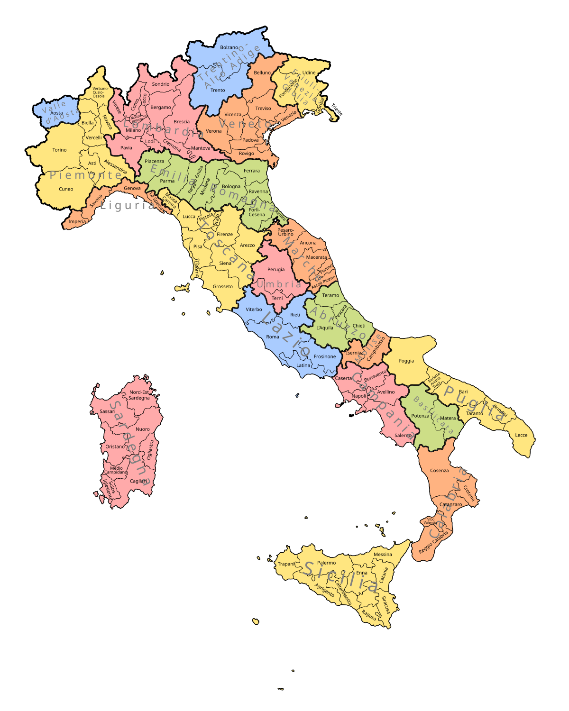
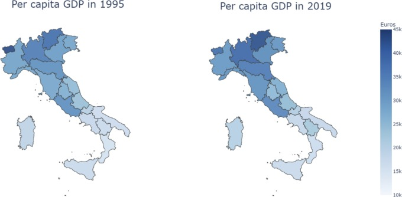
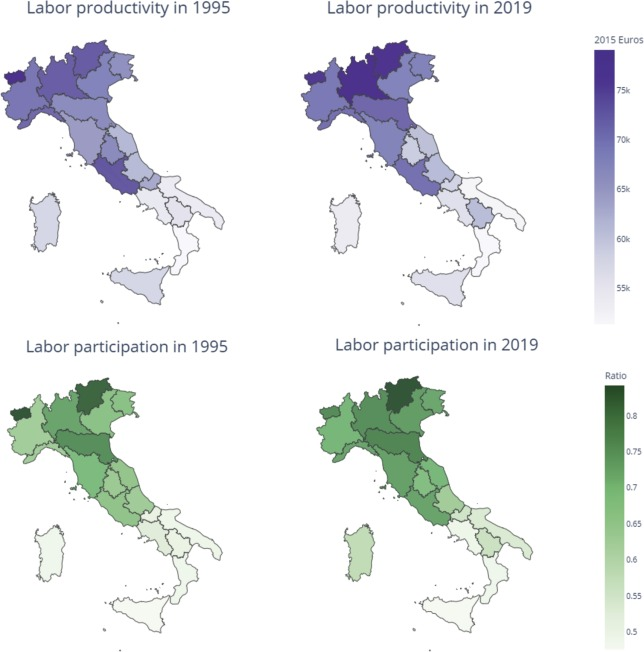
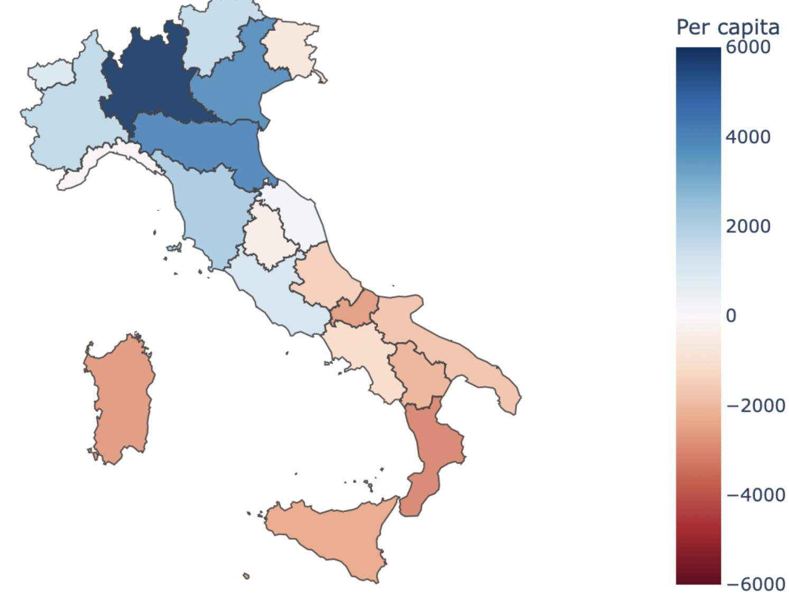

Італійська Республіка (Repubblica Italiana)
- Столиця: Рим ("Вічне місто")
- Форма правління: Парламентська республіка
- Площа: 301 340 км²
- Населення: ~58.9 млн осіб (одна з найбільш "старих" націй світу)
- ВВП (номінал): ~$2.28 трлн (2024 р.), 8-ма економіка світу, член G7 та ЄС
- Адміністративний устрій: Унітарна держава, 20 регіонів
- Анклави: На території Італії знаходяться дві незалежні держави-анклави: Ватикан та Сан-Марино.
Дуальність економічного розвитку Італії



Сектори Економіки
| Структура ВВП (2023) | Сектор | Ключові галузі та спеціалізація | ||||||
|---|---|---|---|---|---|---|---|---|
|
|
III Третинний сектор(~73% ВВП, ~71% зайнятих) |
|
||||||
II Вторинний сектор(~25% ВВП, ~25% зайнятих) |
|
|||||||
I Первинний сектор(~2% ВВП, ~4% зайнятих) |
|
Італія та Україна
| Сфера | Деталі |
|---|---|
| Економічні відносини |
|
| Військова допомога (після 2022) |
|
| Гуманітарна підтримка |
|
| Політична підтримка |
|
Вікова структура населення (2023)
Цікаві факти
- Італія ділить перше місце з Китаєм за кількістю об'єктів Світової спадщини ЮНЕСКО.
- На території Італії знаходиться єдиний діючий вулкан материкової Європи — Везувій.
- Італійці винайшли фортепіано, окуляри, термометр та барометр.
- Університет Болоньї (заснований у 1088 році) вважається найстарішим університетом у західному світі.